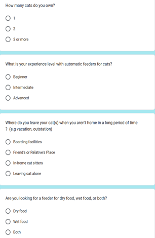

1.0 INTRODUCTION
Design thinking is an innovative problem-solving process by creating sundry new technology and products. Design thinking is almost certainly the best for “thinking outside the box” so that it is freedom to generate ground-breaking solutions. It helps to approach problems creatively in order to meet the users’ needs. Nowadays, design thinking is widely applied to give a hand in many fields. There are five key stages in the framework of design thinking which is empathize, define, ideate, prototype and test.
Empathize
The first stage of design thinking. This stage is to observe and engage with targeted audiences to figure out the users involved, users’ needs and expectations that must be achieved.uction
Define
State the users’ needs and problems. Find out the difficulties needed to be overcome. Then, define a problem statement. This will guide the entire design process.
Ideate
The part to brainstorm ideas. Be open-minded to look for alternative solutions to view the problem statement in order to produce creative products for the sake of users. At the end of this process, a few ideas will come up then move forward to the next step.
Prototype
Prototype is an experimental phase. This phase is to identify the best way for the problem discovered. Create a costless, scaled-down version of the product to look into the idea generated. It can be displayed as an app or model.
Test
Testing phase is to collect feedback to ensure whether the prototype functions well and make some improvements on the weakness of the prototype. Use the result to redefine further problems by returning to the previous stages.
2.0 DETAIL STEP AND DESCRIPTIONS IN DESIGN THINKING AND EVIDENCE FOR EACH PHASE
-
23/10/2023 Briefing of the Design Thinking project was given by Dr. Azurah.
-
30/10/2023
Discussion with group members on what product should be designed for the project.
-
6/11/2023
Discussion with Dr.Azurah to determine whether our idea is accepted or not.
-
10/11/2023
Data collection was done via in-persons interview and Google form for the empathy phase.
-
16/11/2023
Discussion with group members via Google meet to define the problem based on the interview and determine the problem statement.
-
18/11/2023
Discussion with the group members via Google meet to brainstorming ideas to find the best solution for the problem statement for the ideate phase.
-
20/11/2023
Submission of initial report of our Design Thinking project.
-
23/11/2023
Prototype model was created and the application was drawn by using Canva application for the prototype phase.
-
24/11/2023
The prototype model and application is tested to determine their effectiveness.
-
25/11/2023
Discussion with group members via Google meet about the tasks distribution on writing report and editing video for the Design Thinking Project.
-
30/11/2023
Submission of the complete report and video for the Design Thinking project in e-learning platform.
Empathize
Our group target, cat owners, experienced a long list of problems so we began by brainstorming about them all. We tried to gather information about the particular problems and worries that cat owners have when worrying about their cats’ well being during long absences, other than the costly solution of bringing them to a hotel for pets. We could have even conducted interviews and open discussions to achieve this goal.
Our brainstorming approach was influenced by this sympathetic understanding, leading us to develop features that aim to provide owners comfort and assurance in addition to fulfilling the functional demands of cats. Based on the product, we each offer an achievable answer to the lists of problems we were given. This includes designing an application that connects to the prototype via Bluetooth and implementing more functionality into the prototype.
Define
After the empathize process, we discuss through google meet with the data collected. Then, we list out our target users and problems faced in rearing cats. Problem faced by cat owners is that cats are unable to take care of themselves on their own. Therefore, most of the cat owners will send their cats to the cat hostel to take good care of their cats. However, the cat hostel requires a high cost. Besides,there are also limited options for wet cat food dispensers in the market and difficulty in preserving wet cat food for an extended period in room temperature.
Ideate
After the problem statement is stated, we begin to brainstorm ideas to solve the problem. Everyone provides their own opinions and we screen out some valuable and creative opinions. Then, we list out the ideas used to give a rough draft for our prototype. The functions of our cat food dispenser include cooling technology to store wet cat food, barriers to avoid cat knocking the food over, WiFi connectivity to app for timing function and monitoring the cat, kibble function and cameras to record the condition of the cats.
Prototype
After the decision of ideas, we start to proceed to prototype. First, we use a pencil and ruler to measure the size and scale on the cardboard. Next, we cut the cardboard and use the hot glue gun to combine the cardboard into shape. We also put together the plastic bottle and the shaped cardboard. Finally, our prototype is done.

3.0 DETAILED DESCRIPTIONS
3.1 Problem
We have listed out some problems. Cats definitely cannot take care of themselves on their own. Some cat owners are also not affordable for the expensive cat hostel. Besides, wet cat food is also hard to preserve for an extended period under room temperature.
3.2 Solution
After our discussion, we decided to design a multi-functional cat food dispenser. First of all, our cat food dispenser has three containers to keep dry food, wet food and water separately. The volume of the container is about 1.5L. For wet food containers, we place a cooler inside the container so that the wet food is durable.
Besides, we designed our product to be electronic so that it can be controlled remotely. This is because if the owners of cats forget to give food to the cat, they can remotely control the cat food dispenser to feed the cat by using an application. There are a few modes of cat food dispenser so that users can set the timer and quantity of cat food on their own. The first mode is the fixed mode which means that a fixed amount of cat food will be released at a fixed time. The second mode is the free mode which means that users can set different amounts of cat food for different periods of time. This can benefit the user who has more than one cat.
Apart from that, there are two power supply methods for the cat food dispenser which are through battery and via USB power cable. We also attached a large wide-angle night vision camera with the cat food dispenser so that users can always keep an eye on the cat's condition. When the container is almost empty, a warning will also be given in the application.
3.3 Team Working
We have distributed the tasks among ourselves. All of us are writing the report together. Some of us will be in charge of the prototype while the rest of the members play their roles in video making. In this project, we respect each other and have a good team working that allows us to perform a good assignment.
4.0 DESIGN THINKING ASSESSMENT POINTS, WHEN SHOULD ASSESSMENT HAPPEN
Design thinking is an innovative problem-solving process by creating sundry new technology and products. Design thinking is almost certainly the best for “thinking outside the box” so that it is freedom to generate ground-breaking solutions. It helps to approach problems creatively in order to meet the users’ needs. Nowadays, design thinking is widely applied to give a hand in many fields. There are five key stages in the framework of design thinking which is empathize, define, ideate, prototype and test.Design thinking alone could result in poor decisions and results if assessments aren't made or our discussion outcomes aren't settled. We make sure that our process of making decisions is constantly evaluated by carefully establishing assessment points throughout the project, especially when phrases of design thinking are changing. This approach serves to reduce the possibility of neglecting important factors and promotes more comprehensive possible solutions.
Empathize
We used an in-depth approach to obtain information in order to build a solution specifically for cat owners. We ensured a varied range of perspectives by distributing Google Forms to cat owners and doing in-person interviews. These interviews helped us better understand the unique requirements and preferences of our target group while also achieving insightful information about the difficulties and worries faced by cat owners. A solid foundation for ideas has been offered by the information collected through online surveys and personal interviews.
Define
Our focus now shifts to a thorough review and summary of the problems found during the empathetic phrase in this crucial phase. Our goal is to effectively condense these findings into a clear problem statement that will serve as our process map for design. "How can we enhance and innovate an automatic cat feeding dispenser based on the insights gleaned from the interviews?" is how we initially define our problem statement. This problem statement not only points out the need for innovation, but it also reflects our dedication to improvement.
Ideate
Our creative process starts with a thorough brainstorming session during the ideation phase, with the goal of coming up with solutions based on the problem in every way. To improve hygiene, for instance, we propose a bowl covered in plastic that automatically replaces itself in the maintenance and cleaning section. Furthermore, other functions include smartphone app integration or camera monitoring. The cat food dispenser has an enormous, wide-angle night vision camera attached to it so that owners can monitor the cat using cutting-edge technology.
Prototype
After that, we started to make our prototype which is an automated cat food dispenser. One well-known idea that evolved was the design of a multipurpose electronic cat food dispenser. This dispenser is made to be both automatic and multifunctional, which will improve the cat's entire care experience.An important aspect of our projected prototype is its wireless remote performance, which is enabled by the WiFi technology that can be connected to the application that is being developed specifically to the prototype.
5.0 DESIGN THINKING EVIDENCE
5.1 The sample work by students working to solve the design challenge
Since some of our group members have cats, we decided to design aproduct that is related to cats. Through our conversation with the people who have cats, we found out that most of them face the problem of taking good care of cats when they are not with cats. Since some of our group members have cats, we decided to design a product that is related to cats. Through our conversation with the people who have cats, we found out that most of them face the problem of taking good care of cats when they are not with cats.
5.2 Record for each phase
In the first phase which is empathy, we need to know the problems that a cat owner faces. Therefore, we interviewed some people by using google form for those who have cats to determine their problems to take good care of cats.
In the second phase which is defined, we have listed out some problems that a cat owner faces. After that, we summarize the problems to define the main factor of problems.
In the third phase which is ideate, we are brainstorming to determine the best solutions for the problems. Each of us provides some ideas to solve the problems that are listed out in phase 2. After our long discussion, we made the decision to design an electronic multi-function cat food dispenser.
In the fourth phase, which is a prototype, we worked together to make a prototype by using some recyclable materials such as plastic bottles and cartons. We also draw the app interfaces by using Canva application.
In the last phase, which is the test phase, we test our prototype with the cats to show how the prototype functions. We also show how the application works by displaying the app interfaces using mobile phones.
6.0 REFLECTIONS
a. What is your goal/dream with regard to your course/program?
My main goal as a bioinformatics student is to become an experienced analyst who is knowledgeable about the specifics involved in biological data mining. I want to be knowledgeable in a wide range of skills, such as multiple programming languages and computational biology. In the future, I hope to use my knowledge of bioinformatics to advance technology in our nation, especially as it relates to issues facing the environment, agriculture, and healthcare.
b. How does this design thinking impact on your goal/dream with regard to your program?
The application of design thinking has brought insight into the value of using a problem-solving approach to real-world issues in the field. The elements that are essential in bioinformatics solutions have been made accessible by design thinking. Gaining skills in these fields will help me reach my goal of being a bioinformatician who can solve problems creatively and advance both science and society.
c. What is the action/improvement/plan necessary for you to improve your potential in the industry?
My improvement strategy focuses on developing fundamental bioinformatics abilities, such as proficiency with relevant programming languages, bioinformatics tools, and computational biology. In particular, I want to improve my knowledge such as data visualization and ethical data handling for biological systems.